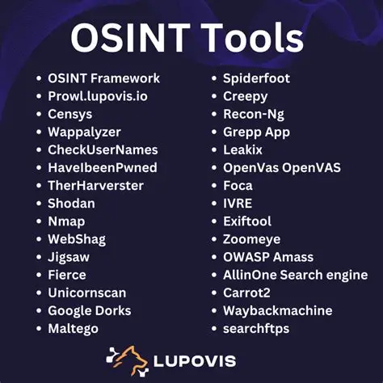

What is OSINT?
OSINT, or Open Source Intelligence, is the practice of collecting and analyzing publicly available information to support investigations, security assessments, and decision-making. Unlike secretive intelligence gathering, OSINT uses information that is accessible to anyone online, in public records, social media, news, forums, or government databases.
Organizations and cybersecurity professionals use OSINT to identify threats, track digital footprints, and prevent attacks before they happen. For example, analysts may use OSINT to detect leaked credentials, monitor hacker forums, or gather information about potential targets.
There are many tools and techniques in OSINT, including search engines, social media monitoring, geolocation analysis, and metadata extraction. The goal is to turn raw public information into actionable intelligence while staying completely legal and ethical.
OSINT is widely used in cybersecurity, law enforcement, corporate security, and even competitive intelligence. It allows investigators to uncover threats, map networks, and gain insights without breaking laws or accessing restricted systems.
In short, OSINT is the art and science of finding intelligence in plain sight. By mastering OSINT, cybersecurity professionals can predict threats, defend organizations, and make smarter decisions based on publicly available data.

- Maltego: Industry-leading OSINT tool for link analysis and visualization, mapping relationships between people, domains, emails, and infrastructure.
- Shodan: The search engine for internet-connected devices, servers, IoT devices, webcams, and exposed services.
- Censys: Discover and monitor internet-facing assets, with rich data on servers, certificates, and protocols.
- SpiderFoot: Automated OSINT reconnaissance platform that collects intelligence from hundreds of public sources for domains, IPs, and individuals.
- Amass: Reconnaissance framework for domain enumeration, subdomain discovery, and network mapping.
- theHarvester: Gathers email addresses, domains, subdomains, IPs, and employee info from public sources and search engines.
- Recon-ng: Modular reconnaissance framework for collecting OSINT, integrates with APIs for automated data gathering.
- Have I Been Pwned: Breach intelligence tool to check whether emails or passwords were exposed in known data breaches.
- OSINT Framework: A web-based directory of OSINT tools organized by category, making it easy to find the right tool for each task.
- FOCA: Metadata analysis tool that extracts hidden information from documents, helping in footprinting targets.
- BuiltWith: Reveals the technologies and frameworks used by websites, useful for reconnaissance and competitive analysis.
- Social-Searcher: Social media monitoring tool to track mentions, hashtags, and profiles across platforms.
- Metagoofil: Extracts metadata from public documents (PDF, DOC, PPT) to collect usernames, paths, and software versions.
← Back to Blog